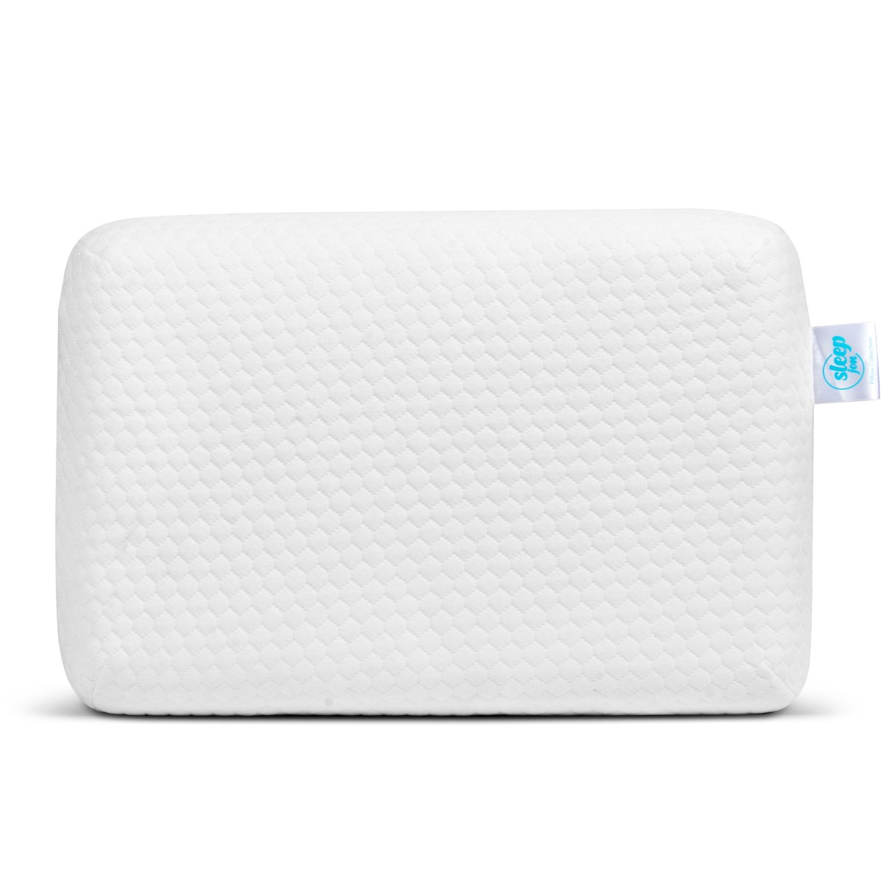
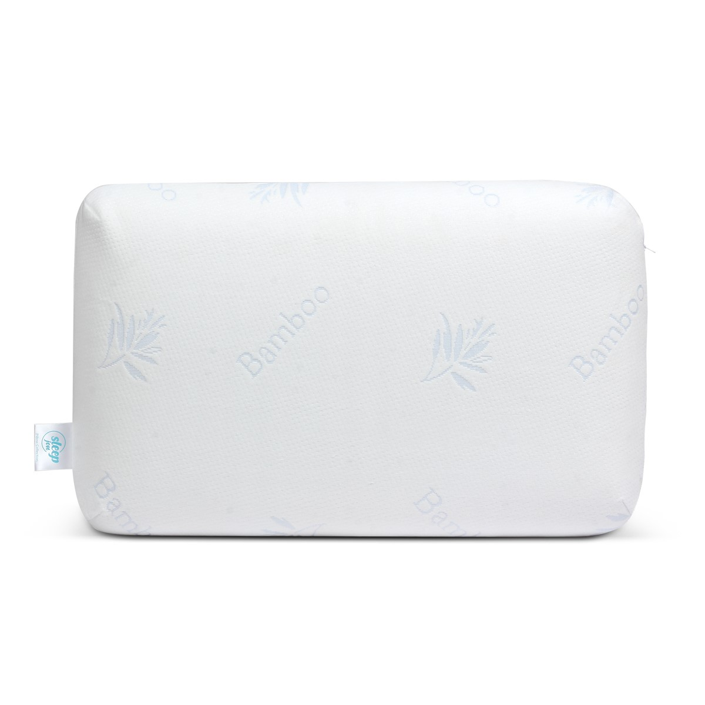
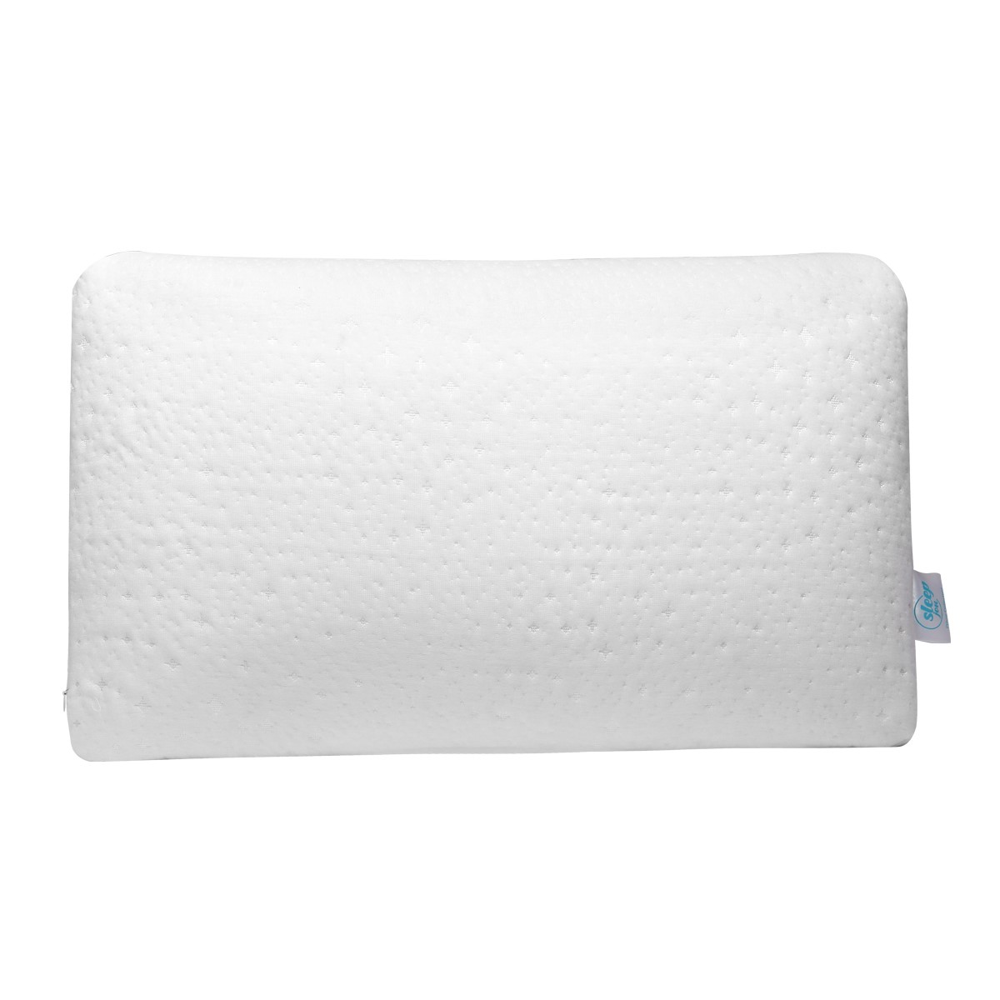
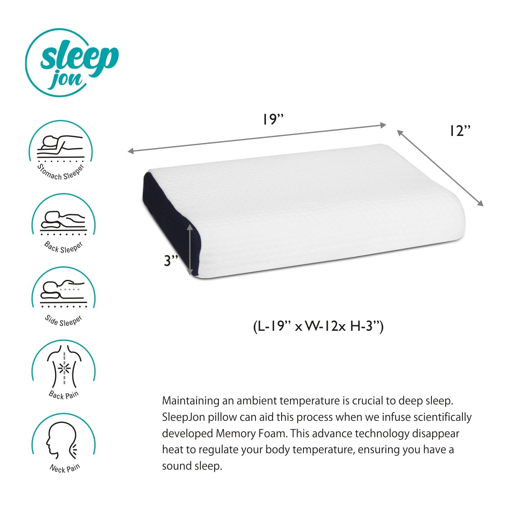

Our story
We had started our journey in 2019, by the name of SLEEPJON. We are into the business of home furnishing and we are provide comfort for every home. There is a continuous pursuit of excellence in performance, quality and innovation, and the passion to bring to you the highest, premium quality pillows in the home furnishings space. Innovation and customization is our biggest strength. Our continuous efforts and investment in new innovation, materials, design trends and substrates, provides customers with a wide variety of contemporary products. Our mission is to provide you with the restful and comfy sleep. We believe in making your sleep easier. We create pillows for people who have different body types and sleeping styles, and hence, they should have access to a wide range of pillows to choose as per their comfort levels and personal choice.
Our product
1. SleepJon Regular soft pillow
● TRADITIONAL SHAPE of The Memory Foam Pillows For Sleeping : are a great alternative from the cotton filled Or microfiber pillows, which sag and clump soon after use. The Pillows help in relieving pressure ,back pain and provide neck pain relief.
● ZERO PRESSURE RELIEF & PERFECT COMFORT WITH HIGH DENSITY : The regular Memory foam pillows are not just comfortable, but also provides relief from backaches, headaches, neck issues or other pain related problems which we face due to stress.
● LUXURY SLEEPING PILLOW : Provides therapeutic relief for all sleepers and neck pain. It Comes with a premium Outer Cover with a zip which is soft and easy on the skin: Get these pillows and match with them your favourite bedsheets and pillow covers.
● HEALTHY & SAFE : Safe to use, eco-friendly, the pillows are hypoallergenic and free from any dust mites and irritants.These pillows are nice and thick (4 inches height) and work well with individuals who like more thickness and bulk.
2. SleepJon Bamboo fabric pillow
● Perfect Ergonomic Design for Neck & Back provides Multiple Support and Comfort: provides better support to the Cervical Spine Area than any traditional pillow.
● The traditional pillow is very easy to adjust and maintains the natural curve of the neck to support the neck properly.
● Made with High Density Memory foam, keeps the shape of the head, neck and shoulder well supported, and offers maximum comfort during sleep.
● Ideal for all Sleeping Positions: The High and low curved surfaces at both ends provide a custom fit to satisfy any side, back or stomach sleeper.
● Removable, washable, Bamboo outer cover with a zip along with stitched jersey inner fabric is soft, breathable and protects the inner memory foam
3. SleepJon Cloudix Natural Latex Feel Foam Pillow
● HEALTHY & SAFE: These pillows are ideal for side sleepers. Perfect sleeping support for your Neck, allowing the nervous system to work naturally even while you are asleep
● Also provide optimal breath ability. This Pillow for sleeping is recommended by most Doctors because this has produced magical result in severe case of spondylitis and cervical
● Latex foam conforms to the shape of the head and neck. This pillow reduces neck pain and helps side sleepers sleep comfortably.
● Produced in SleepJon, a material designed exclusively by SleepJon , these pillows are the highest expression of excellence when it comes to comfort and ergonomics, essential for ensuring a perfect sleep experience from every point of view.
● Comes with two cover Inner & Outer
4. SleepJon Contour baby pillow
● MEMORY FOAM CORE - orthopaedic pillow that perfectly moulds around your head and neck, slowly bounces back to readjust its shape giving you optimal head and neck support whilst you sleep.
● ERGONOMIC NECK PILLOW - contour wave shape memory foam neck pillow with 2 heights designed for side and back sleepers. Supports your head and neck in neutral alignment. Prevents neck strain, allows you to breathe with ease and reduces snoring.
● COMFORTABLE & SKIN FRIENDLY - breathable outer fabric with double airflow properties for optimal temperature and sweat prevention. Hypoallergenic, resistant to dust mite and mold. You can enjoy uninterrupted and refreshing sleep in all seasons.
● PROTECTIVE OUTER AND INNER COVERS - protective pillow cases for good hygiene. Breathable ultra soft mesh outer cover has a hidden zipper for ease of removal and the cover is machine washable.